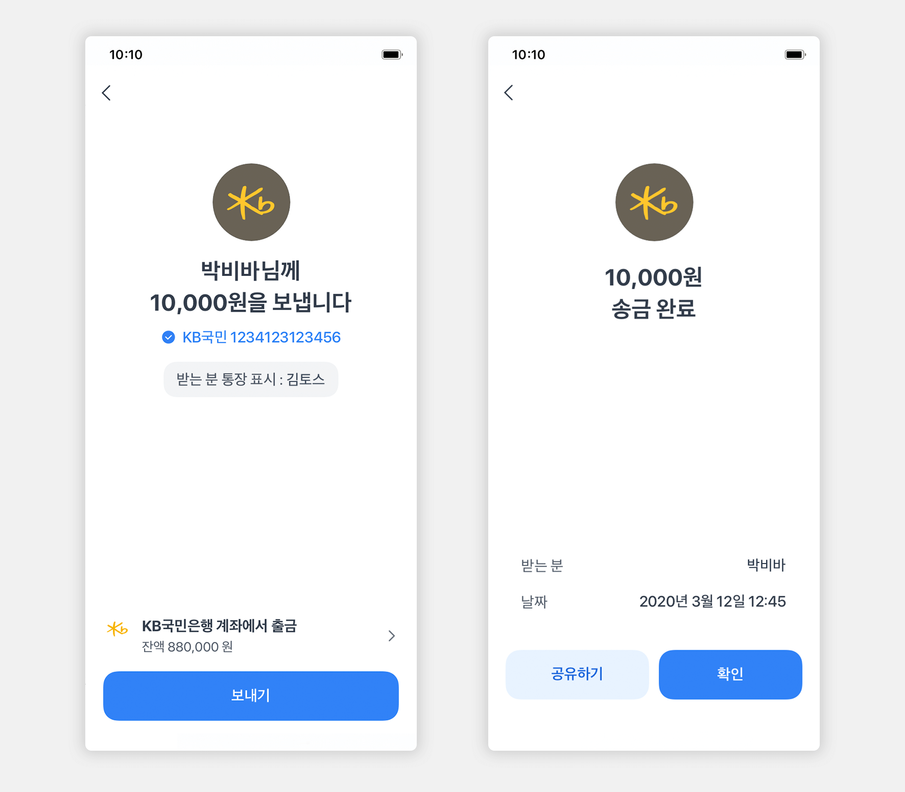

토스(Toss)를 통한 간편송금 서비스를 2015년에 시작으로 신용등급조회, 토스인증서, 소비관리 등 이용자 친화적인 금융 서비스가 연이어 히트하면서 2021년 3월 기준 누적 사용자 1800만명을 기록했습니다. 서비스 출시 3년 만에 테크핀 첫 유니콘 기업에 오르기도 하였다. 현재 자회사 토스보험, 토스준비법인, 토스페이먼츠, 비바퍼블리카베트남과 관계사 인포텍코퍼, 한국전자인증을 둔 비바퍼블리카는 40여 가지 금융서비스를 제공하고 있다. 2020년 매출이 전년 대비 230% 증가한 3898억 원을 기록하는 등 폭발적인 성장을 지속하고 있는 토스는 2021년 증권사(토스증권)과 인터넷은행(토스뱅크)를 출범하면서 기업의 정체성을 종합금융사로 확장했습니다.
2021년 본격적으로 성장한 '비바리퍼블리카 베트남'이 현지에서 300만 월간 활성 이용자를 확보하고 2022년 최근 토스 애플리케이션을 통한 신용카드 발급과 소액대출 서비스를 시작했습니다. 인도네시아와 말레이시아, 태국, 필리핀, 인도 등 5개 동남아 국가에 토스 앱을 출시하고 초기 이용자 확보에 나서 사업확장에 힘쓰고 있습니다.
1) 간편송금

토스는 공인인증서 없이도 상대방 전화번호만 입력하면 쉽고 빠르게 송금(계좌이체)할 수 있는 간편송금 서비스부터 시작했습니다. 출시 첫해 토스 앱 누적 다운로드 수는 100만건을 돌파했습니다. 2016년 말 35억원이던 매출은 2018년 말 548억원으로 뛰어올랐습니다. 2018년에 국내서는 네 번째로 기업가치가 10억달러(약 1조2000억원)를 넘는 유니콘기업으로 등극하기도 했습니다.
현재 누적 사용자는 1800만명, 누적 송금액은 130조원 이상으로 집계됩니다. 토스는 미니보험 4종을 내놓고 보험서비스에 뛰어들며 독립보험대리점(GA)을 세웠습니다. 체크카드 역할을 하는 '토스카드'와 중고차 시세조회 서비스 등도 잇달아 내놨습니다. 명실상부하게 계좌와 카드, 신용, 보험 등 각종 조회서비스와 적금과 대출 등 금융상품 개설을 아우르는 종합 금융 플랫폼으로 성장했습니다.
이달부터는 증권사 운영을 허가받고 '토스증권'을 비바리퍼블리카의 100% 자회사로 운영하기 시작했습니다. 지점이 없는 모바일 전문 증권사를 표방하고 있습니다. 국내 증권 시장에 12년 만에 등장하는 신생 증권사인 토스증권은 모바일트레이딩시스템(MTS)의 사전 신청에만 50만명에 가까운 인원이 몰리며 유례없는 인기를 보여주기도 했습니다.
2. 토스문화
여전히 미디어에서 비치는 금융의 모습은 똑같은 유니폼을 입고, 목젖까지 꽉 짜맨 넥타이를 맨 은행원들의 모습이 시그니처처럼 떠오릅니다. 청바지와 반팔, 후드티와 체크셔츠를 입은 토스 구성원들이 주는 자유로운 느낌만으로 요즘 회사라는 느낌이 물씬 들게 했습니다.
"'규제를 바꾼다. 규제를 부순다'라기보다 이해관계자 모두가 이길 수 있는 새로운 축을 소개하는 게 되게 중요하다고 생각했다. 시대가 바뀌었다. 사람들이 원하는 새로운 편익이 있다. 이거에 맞는 규제환경은 다시 디자인돼야 하지 않을까. 그 생각들에 이해관계자가 공감해줘서 규제 변화라는 결과도 나왔다."
"대표가 앞에서 말해도 구성원 모두가 설득되지 않는다. 누구나 왜(Why)에 대한 질문을 많이 한다. 이걸 하면 어떤 목표를 달성할 수 있나. 이걸 하면 어떤 지표가 유지되나요 묻는 게 일상이다."
"어느 기업을 가나 점점 더 높은 직군에 있는 사람에게 더 많은 정보가 쏠리고, 그 사람은 정보가 더 많으니까 더 나은 의사결정과 유리한 위치에 있다. 하지만 토스는 내가 접근할 수 있는 모든 정보에 투명하게 접근해서 누구나 다 똑같은 정보를 가지고 일을 잘했으면 좋겠다는 게 다르다."
"모든 사람들의 삶을 조금씩 바꾸는 것은 30~40초 시간을 줄이는 것일 수 있고, 편하게 차 타고 가는 경험일 수 있다. 작은 삶의 변화 경험이 한두 명이 아니라 수십만 명 수백만 명 삶을 바꿔나갈 때 굉장한 혁신이 된다. 작은 삶의 변화라고 하더라도 대한민국 국민 전체의 삶을 바꾸는 데 집중하고 있다."